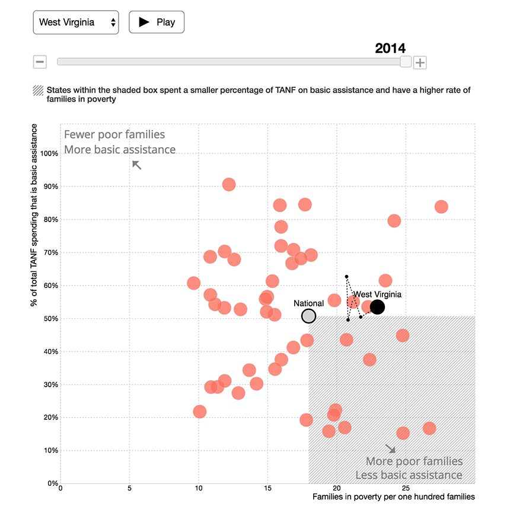

The 1996 welfare reform law gave control of $16.5 billion in federal spending to states in the form of block grants. The goal of the reforms was to help those who needed public assistance lift themselves out of poverty by giving them some financial support and getting them working.But two decades later, most states have higher rates of families living in poverty. At the same time, 45 states are spending a smaller percentage of their welfare dollars on basic assistance, which includes cash welfare, child care and work-related assistance. This is how those changes look like over time.
